主题色 × 36 Skill/handraw-style（handdraw-style-prompter）
36 个主题色，6 色系 × 6：经典蓝 / 清新绿 / 古典红绿 / 浪漫粉紫 / 暖阳大地 / 中性。
「配色：C-15」；CLI: --color C-01全部经典蓝系清新绿系古典红绿浪漫粉紫暖阳大地中性色系

C-01 · 克莱因蓝
Klein Blue
经典蓝系｜纯粹之蓝 通向无限
配色：C-01
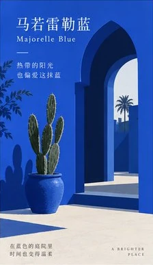
C-02 · 马若雷勒蓝
Majorelle Blue
经典蓝系｜热带的阳光 也偏爱这抹蓝
配色：C-02

C-03 · 普鲁士蓝
Prussian Blue
经典蓝系｜理性的深邃 沉淀思想
配色：C-03
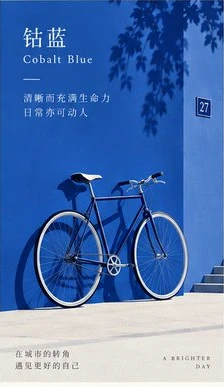
C-04 · 钴蓝
Cobalt Blue
经典蓝系｜清晰而充满生命力 日常亦可动人
配色：C-04
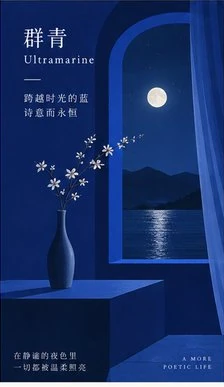
C-05 · 群青
Ultramarine
经典蓝系｜跨越时光的蓝 诗意而永恒
配色：C-05
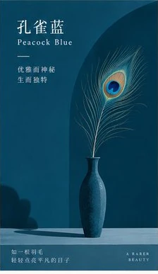
C-06 · 孔雀蓝
Peacock Blue
经典蓝系｜优雅而神秘 生而独特
配色：C-06
C-07 · 蒂芙尼蓝
Tiffany Blue
清新绿系｜把美好封存 让日常闪闪发光
配色：C-07
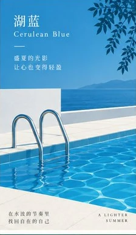
C-08 · 湖蓝
Cerulean Blue
清新绿系｜盛夏的光影 让心也变得轻盈
配色：C-08
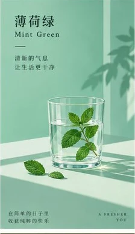
C-09 · 薄荷绿
Mint Green
清新绿系｜清新的气息 让生活更干净
配色：C-09
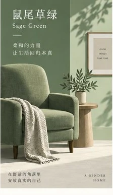
C-10 · 鼠尾草绿
Sage Green
清新绿系｜柔和的力量 让生活回归本真
配色：C-10
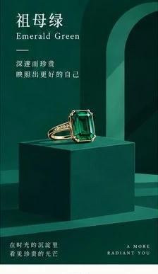
C-11 · 祖母绿
Emerald Green
清新绿系｜深邃而珍贵 映照出更好的自己
配色：C-11
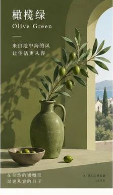
C-12 · 橄榄绿
Olive Green
清新绿系｜来自地中海的风 让生活更从容
配色：C-12
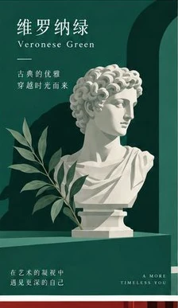
C-13 · 维罗纳绿
Veronese Green
古典红绿｜古典的优雅 穿越时光而来
配色：C-13
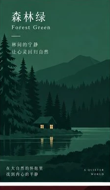
C-14 · 森林绿
Forest Green
古典红绿｜林间的宁静 让心灵回归自然
配色：C-14
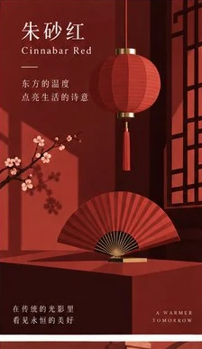
C-15 · 朱砂红
Cinnabar Red
古典红绿｜东方的温度 点亮生活的诗意
配色：C-15
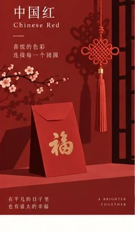
C-16 · 中国红
Chinese Red
古典红绿｜喜悦的色彩 连接每一个团圆
配色：C-16
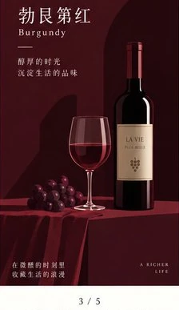
C-17 · 勃艮第红
Burgundy
古典红绿｜醇厚的时光 沉淀生活的品味
配色：C-17
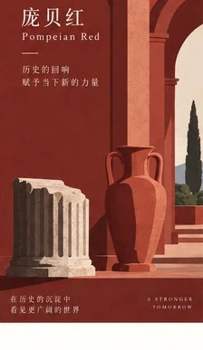
C-18 · 庞贝红
Pompeian Red
古典红绿｜历史的回响 赋予当下新的力量
配色：C-18
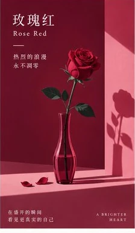
C-19 · 玫瑰红
Rose Red
浪漫粉紫｜热烈的浪漫 永不凋零
配色：C-19
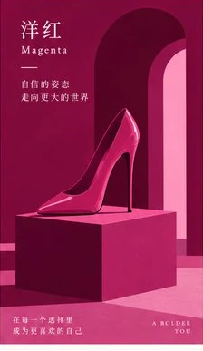
C-20 · 洋红
Magenta
浪漫粉紫｜自信的姿态 走向更大的世界
配色：C-20
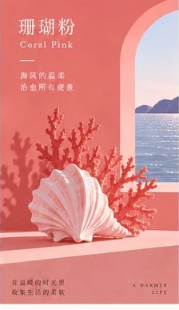
C-21 · 珊瑚粉
Coral Pink
浪漫粉紫｜海风的温柔 治愈所有疲惫
配色：C-21
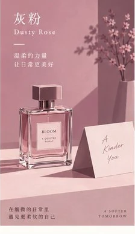
C-22 · 灰粉
Dusty Rose
浪漫粉紫｜温柔的力量 让日常更美好
配色：C-22
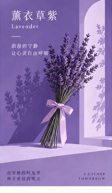
C-23 · 薰衣草紫
Lavender
浪漫粉紫｜浪漫的宁静 让心灵自由呼吸
配色：C-23
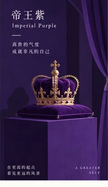
C-24 · 帝王紫
Imperial Purple
浪漫粉紫｜高贵的气度 成就非凡的自己
配色：C-24
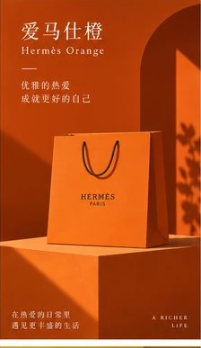
C-25 · 爱马仕橙
Hermès Orange
暖阳大地｜优雅的热爱 成就更好的自己
配色：C-25
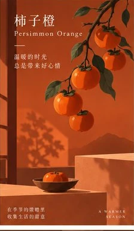
C-26 · 柿子橙
Persimmon Orange
暖阳大地｜温暖的时光 总是带来好心情
配色：C-26
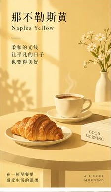
C-27 · 那不勒斯黄
Naples Yellow
暖阳大地｜柔和的光线 让平凡的日子也变得美好
配色：C-27
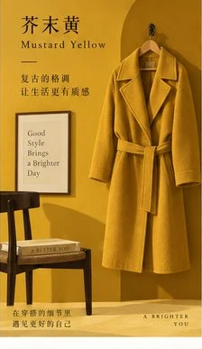
C-28 · 芥末黄
Mustard Yellow
暖阳大地｜复古的格调 让生活更有质感
配色：C-28
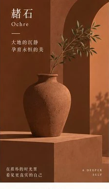
C-29 · 赭石
Ochre
暖阳大地｜大地的沉静 孕育永恒的美
配色：C-29
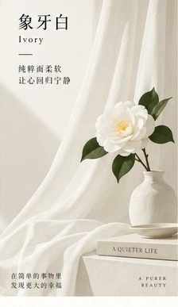
C-30 · 象牙白
Ivory
暖阳大地｜纯粹而柔软 让心回归宁静
配色：C-30
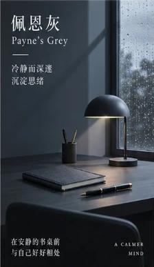
C-31 · 佩恩灰
Payne's Grey
中性色系｜冷静而深邃 沉淀思绪
配色：C-31
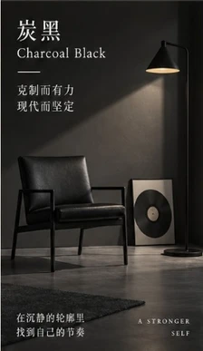
C-32 · 炭黑
Charcoal Black
中性色系｜克制而有力 现代而坚定
配色：C-32
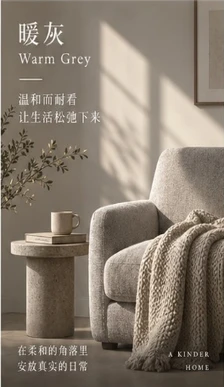
C-33 · 暖灰
Warm Grey
中性色系｜温和而耐看 让生活松弛下来
配色：C-33
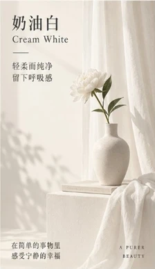
C-34 · 奶油白
Cream White
中性色系｜轻柔而纯净 留下呼吸感
配色：C-34
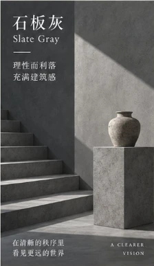
C-35 · 石板灰
Slate Gray
中性色系｜理性而利落 充满建筑感
配色：C-35
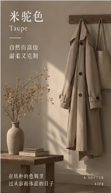
C-36 · 米驼色
Taupe
中性色系｜自然而高级 温柔又克制
配色：C-36
色调 × 16 Skill/handraw-style（handdraw-style-prompter）
16 种影调：明暗阶调（高 / 中 / 低调）、反差过渡（软 / 硬调）、氛围（灰调 / 雾化 / 戏剧 / 剪影 / 胶片…）。
对话中追加「色调：T-05」全部明暗阶调反差过渡氛围风格
T-01 · 高调
High-key
明暗阶调｜以明亮浅淡色调为主，阴影极少，明朗纯净
色调：T-01
T-02 · 中间调
Mid-key
明暗阶调｜明暗层次丰富均衡，还原自然视觉真实感
色调：T-02
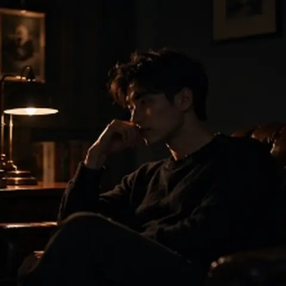
T-03 · 低调
Low-key
明暗阶调｜以深重暗色调为主，高光点缀，神秘沉稳
色调：T-03
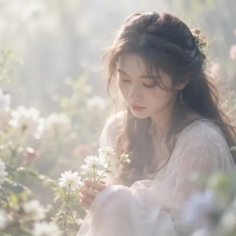
T-04 · 软调
Soft Tone
反差过渡｜阶调过渡柔和绵密，对比微弱，温润细腻
色调：T-04
T-05 · 硬调
Hard Tone
反差过渡｜明暗反差强烈，光影交界锐利，轮廓硬朗有力量
色调：T-05
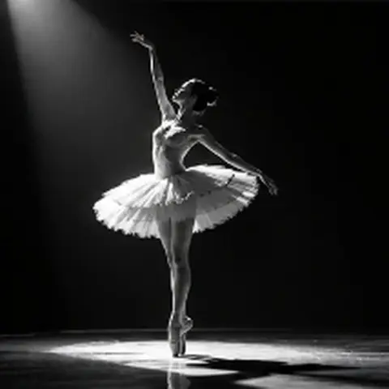
T-06 · 高反差
High Contrast
反差过渡｜亮部极亮、暗部极深，冲击力强，张力十足
色调：T-06
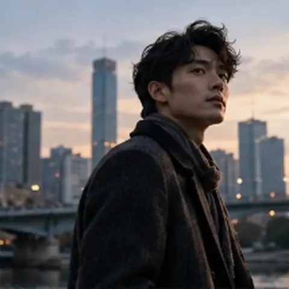
T-07 · 中反差
Medium Contrast
反差过渡｜反差适中，层次自然过渡，舒适耐看
色调：T-07
T-08 · 低反差
Low Contrast
反差过渡｜明暗差异微小，灰度丰富，平和静谧
色调：T-08
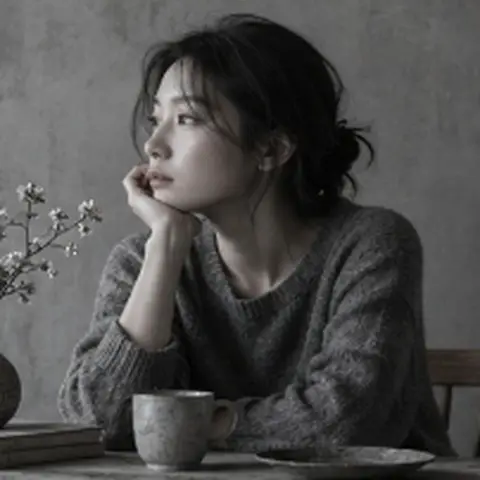
T-09 · 灰调
Gray Tone
氛围风格｜阶调分布均衡于中间灰，克制内敛，高级质感
色调：T-09
T-10 · 雾化调
Muted / Hazy Tone
氛围风格｜空气透视感明显，烟波雾霭，诗意朦胧
色调：T-10
T-11 · 戏剧调
Dramatic Tone
氛围风格｜戏剧性强光影明暗交错，舞台光感，张力拉满
色调：T-11
T-12 · 剪影调
Silhouette Tone
氛围风格｜强逆光曝光，勾勒主体纯黑剪影轮廓，意境深邃
色调：T-12
T-13 · 通透调
Luminous / Clear Tone
氛围风格｜光线澄澈纯净，空气透明度高，明快清爽
色调：T-13
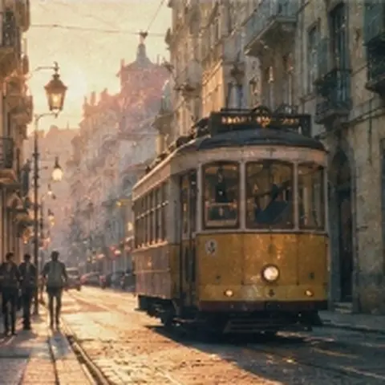
T-14 · 胶片调
Film Tone
氛围风格｜经典胶片颗粒与复古调色，色彩浓郁，叙事质感
色调：T-14
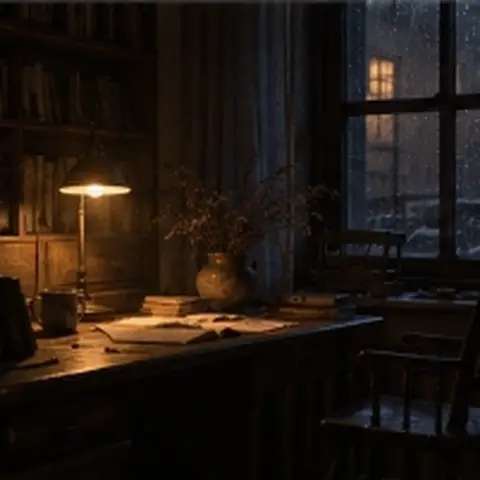
T-15 · 暗沉调
Moody / Somber Tone
氛围风格｜压低环境照度，暗调情绪弥漫，幽静深邃
色调：T-15
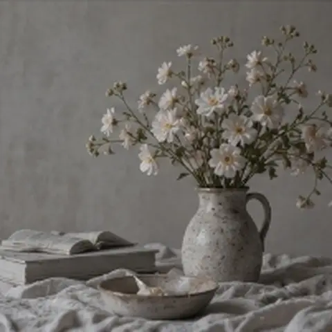
T-16 · 柔灰调
Soft Gray Tone
氛围风格｜低饱和柔和灰阶，光影微澜，静谧典雅
色调：T-16